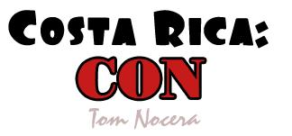
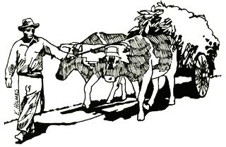

For any of MOTHER's readers who are considering a move to Costa Rica, I'd like to point out a few facts that are too realistic for tourist brochures and land sale ads and too current for encyclopedias.
Costa Rica is publicized as a "storybook" country. That, however, simply isn't true any longer . . . as many Americans are finding out at considerable expense. I've lived here not quite six months and have felt a change in just that time. Before I leave I want to report on the local situation, the problems an immigrant can expect to face and the reasons behind those problems.
First, about entering the country: Possibly the smallest of the difficulties you'll encounter will begin well before you reach the border. Although the fact isn't publicized, you must meet certain qualifications even to buy a plane ticket to visit Costa Rica. Your physical appearance at the airport can make a substantial difference, since stereotype "hippies" are officially unwelcome and are discouraged as a matter of policy by the governmentowned airline, Lacsa. Also, to ensure that no vagabonds come to stay permanently, you must hold a return ticket out of the country before you'll even be allowed to enter.
If you pass the appearance test, the only documentation you'll need is proof of U.S. citizenship (a passport, voter's registration card or driver's license will do) and a current smallpox vaccination certificate. With these and $2.00 you can obtain a 30-day tourist card from the airline. This permit may be extended for up to half a year. Occasionally, though, an extension is refused on the basis of appearance or any trouble with the police the visitor may have had during his first month in Costa Rica.
Other visas, or resident status, are available to qualified persons. Since information on these is subject to change without notice, check with the nearest Costa Rican consulate for current immigration regulations before you start packing. If you have an outside income of at least $300 a month, you should investigate pensionado status with its lucrative tax dodges.
Before you make travel plans, however, you must understand one important fact: Costa Rica is no longer an inexpensive, quiet country with the welcome mat out for more North Americans. The biggest problem facing the would-be homesteader is an inflation rate that has been estimated at 30 percent a year. That's about three times the figure for the U.S., and the second highest in this hemisphere . . . surpassed only in Chile.
A recent development that does nothing to help reduce prices is the creation of a new industry: tourism. Almost overnight Costa Rica discovered its potential in this field, built some visitors' hotels and set out to capitalize on the fact that Europe had priced itself out of the travel market. The resulting influx has become a mainstay of the otherwise agriculturally oriented economy. Unfortunately, along with the volcano-visiting tourists have come the big land developers, speculators and agribusiness concerns who eagerly buy up whatever property they can in hopes of a quick profit.
Partly as a result of such dealings, the price of land has been increasing here at a rate that's hard to believe. Some people say that the cost of acreage has quadrupled in the past two years, while good farmland has climbed even more. A leveling off may be in sight, though, since property is now in many cases more expensive here than it is in the U.S.
The Costa Ricans-most of whom can't afford to buy acreage today-are getting upset over the high prices. Many are saying privately that the Americans are responsible for the recent inflationary land rush, and that speculation in real estate will have to be controlled. It should be remembered, though, that the Costa Rican government has encouraged and promoted foreign investment for the welfare of the country (without reckoning on its economic backfire).
As I write this-in the spring of 1974-a new president is about to take over and it's believed that he will introduce some official measures to control speculation in acreage. Even now, steps are being taken toward regulating the real estate industry in the country, since uncontrolled and unsupervised property sales have led to many bad deals for Costa Ricans and Americans alike.
Meanwhile, as the price of acreage goes up, so does the cost of goods produced from the land. To help the struggling working man, a 25 percent wage increase for all those who make less than $300 a month has been proposed by the outgoing president. He also said recently that there will be "no depression for Costa Rica" . . . a sure sign of some grave problems to come.
It's not surprising that the resident gringos have already noted the beginnings of some anti-U.S. feeling. Some see the rising crime rate around American colonies as an obvious sign of disrespect . . . and the increasing amount of iron grillwork used on the average house as an ornamental defense from intruders is a good indicator of the magnitude of the problem. Also, it's a surprise to turn on the radio and hear government-sponsored reminders urging people to be nice to the Americans who bring needed money into the country.
In other ways, too, the quality of life here may be a disap pointment. The contrast between what one hears and reads about Costa Rica and what actually exists is due to a serious shortage of current, accurate and unbiased information available in the U.S. Most of what gets printed about this country is outdated, or slanted to increase tourism or development . . . and learning the facts after swallowing the half-truths circulated back in the States is a depressing and expensive experience.
For example, everything you read about San Jose, the capital, will fill your head with visions of a quaint European city with a cosmopolitan atmosphere and vast cultural resources. On your first day there, before you've walked around for many hours, you suddenly realize that the overcrowded streets, the nauseating pollution and the high cost of living far outweigh the few French restaurants and the national symphony . . . however good they may be. Of course, a potential homesteader should never try to judge a whole country by the urban scene. In Costa Rica, though, you can't ignore San Jose. It's the hub of the wheel of life and everybody must reckon with it. In any case, the point is: Don't believe everything you read or hear about the good life in Costa Rica.
If you're not completely discouraged by this time-if Costa Rica still sounds better than where you're at and your bankroll will stand the prices-here are a few cautions to observe when you hunt for a good parcel of land at a realistic figure. First, keep in mind that-at this writing, anyhow-there is only talk of regulating the real estate industry. At present the business has no enforced ethics and little exists in the way of recourse for property buyers who find themselves swindled. It's a must, therefore, to deal with reputable agents.
Also, don't count on obtaining a mortgage to buy property here: They're rare and costly. Most transactions are for cash, although you may find a seller who's willing to give some terms. And don't be afraid to contact the U.S. Embassy for assistance in sizing up the real estate market and in choosing an attorney to represent you in the transfer of title. (Oh, yes: The unit of land measurement-the manzana-is equal to 1.74 acres.)
Finally-if you do buy land here-remember that construction costs have been going up in Costa Rica just like everything else. Once it was possible to build for $8.00 per square foot, but those days have passed. Expect delays due to shortages of building materials and the red tape of bureaucracy. Also remember the rainy season, and plan to work around it.
The last problem for newcomers to this Latin American nation-one that faces all immigrants when they find themselves in a new environment-is adapting to the customs, language and lifestyle of another country. Costa Rica is an easygoing place from the outside, but once you get to know it you'll find that it's tainted with discrimination, jealousy, poverty and pollution that will probably never change. The same conditions are of course found in the United States . . . the difference is in the prospect for the future. Costa Rica appears to be in pursuit of growth and development at all costs, while many in the U.S. seem more aware that what we need in life is quality, not quantity. That difference in outlook is important.
I'm sorry to disappoint any of you who may have been looking to Central America for your future homesteads. Still, it's better to know the facts ahead of time than to learn them the hard way. Costa Rica may truly be "the garden of the Americas" . . . but, like every garden, it has its share of weeds.
|
 |
 |
|